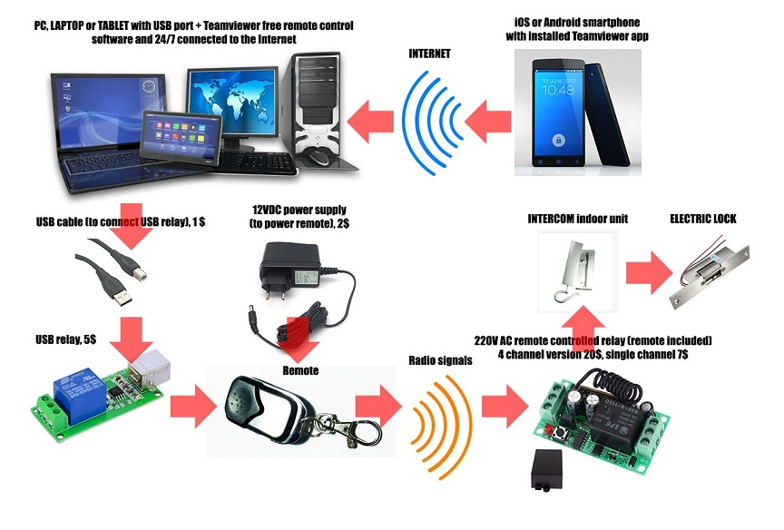
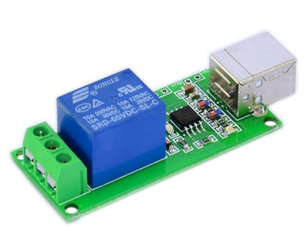
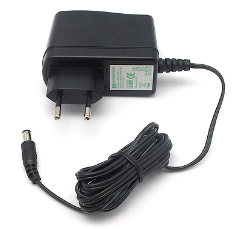
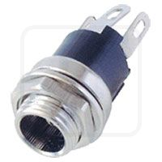
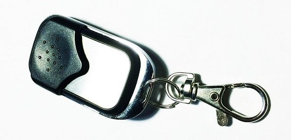
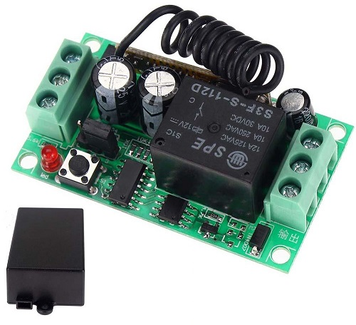

Ovo je malo ambiciozniji projekat, želeo sam da daljinski otvorim električnu bravu ulaznih vrata zgrade. Zamisao je bila da se Android ili iOS telefon povežu na kućni uređaj koji je permanentno na internetu i na kom je uključen program Teamviewer (besplatni program za daljinsku kontrolu računara).

Sistem se sastoji od:1. Jednog kućnog uređaja koji je stalno uključen i povezan na internet (laptop, desktop ili tablet). Uređaj mora da ima USB port i mogućnost da pokrene Teamviewer program. Ja sam koristio svoj kućni desktop računar koji radi neprekidno i funkcioniše kao server. Ako tražite jeftinije i energetski efikasnije rešenje, možete probati sa Raspberry Pi računarom.2. Teamviewer besplatni softver za daljinsku kontrolu računara.3. USB kabl, cena 1-2$4. Kineski "Single channel USB relay", koji povezujemo na kompjuter preko gorepomenutog USB kabla. Cena je oko 5$ na Ebay. Uređaj izgleda ovako:

5. Izvor napajanja (ispravljač) 12VDC za konstantno napajanje daljinskog upravljača. Ja sam iskoristio napajanje wireless rutera, ali verovatno može da se nabavi za 5-10$. Možete u daljinskom upravljaču koristiti i bateriju, pa vam u tom slučaju neće biti potreban ispravljač. Ispravljač izgleda ovako:

6. Priključak za 12VDC ispravljač, cena je ispod 1$ u radio klubu. Ovaj priključak sam nabavio kako ne bih morao da sečem fabrički završetak na ispravljaču. Priključak izgleda ovako:

7. Daljinski upravljač koji se dobija uz daljinski kontrolisane releje. Imao sam dosta sreće, jer je daljinski od metala, kompaktan je i ima malu plastičnu masku koja štiti tastere. Takođe je vrlo lak za otvaranje, ima tri mala šrafa. Evo kako izgleda:

8. Daljinski kontrolisani releji koji rade na 220 volti naizmenične struje, cena je 20$ za četvorokanalni model, ali na Ebay-u možete nabaviti jednokanalni za 6-7$. Daljinski upravljač se dobija uz ove releje. Gornje tri kleme su za napajanje, a donje tri su kleme izlaznog releja. Sve je lepo obeleženo na samom uređaju. Opet sam veoma zadovoljan kvalitetom izrade. Moj stan je na petom spratu, radio signali od daljinskog upravljača su uspevali da uključe daljinski kontrolisani relej čak i kroz nekoliko betonskih zidova, drvena vrata i preko 20m udaljenosti. Evo kako izgleda daljinski kontrolisani relej:

9. iOS ili Android pametni telefon koji je povezan na internet i ima instaliran Teamviewer softver za daljinsku kontrolu. Zamisao je da koristite svoj telefon da se povežete na kućni računar. Na kućnom računaru je instaliran i softver za uključivanje USB releja.10. Trebaće vam i žica za električne veze, 1 metar će biti dovoljan, takođe sam koristio i dvožilni kabl preseka 2x0.75mm2 za vezivanje interfona i daljinskog releja.